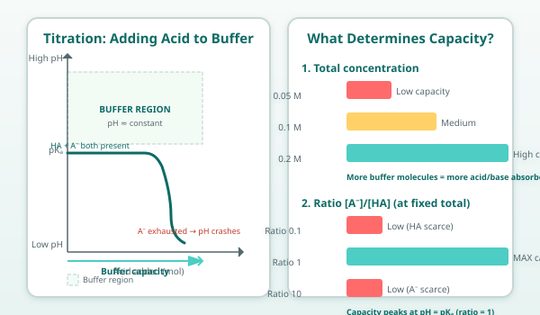

Lessons 1 and 2 showed that a buffer resists pH change by shifting the HA ⇌ H⁺ + A⁻ equilibrium. But the buffer components get used up. Add enough acid, and eventually all the A⁻ is converted to HA — no conjugate base remains to soak up more H⁺. The buffer is exhausted, and the pH plummets.
Buffer capacity is the amount of strong acid or base a buffer can absorb before the pH changes by a given amount (often 1 pH unit).
What Determines Buffer Capacity?
Two factors control capacity:
Total concentration of the buffer pair ([HA] + [A⁻]). More total moles = more acid or base can be neutralized. A 0.5 M buffer has ~5× the capacity of a 0.1 M buffer.
The ratio [A⁻]/[HA]. Capacity is highest when the ratio is near 1 (pH ≈ pKₐ). As the ratio shifts far from 1, one component becomes scarce, and capacity drops sharply.
β ≈ 2.303 × [HA][A⁻] / ([HA] + [A⁻])
(where β is buffer capacity in mol·L⁻¹·pH⁻¹ — the approximate formula above shows it's maximized when [HA] = [A⁻].)
Visual: Buffer Capacity Factors

Visualizing the Limit
Imagine titrating a buffer with strong acid. The pH stays flat — then suddenly drops off a cliff.
pH │
│────────────────── ← Buffer region (flat)
│
│ \
│ \ ← Equivalence point: buffer exhausted
│ \
│ \
└─────────────────────────► Acid added
Capacity used up
The "flat" region is where both HA and A⁻ are present in useful amounts. Once one runs out, the solution behaves like plain water (or a solution of just the weak acid).
Practical Rules of Thumb
Use enough buffer: For most lab work, 0.05–0.2 M total concentration is typical. Too dilute = low capacity. Too concentrated = ionic strength effects, cost, solubility limits.
Stay near the pKₐ: Effective range is roughly pKₐ ± 1. Outside this, one component is < 10% of the other, and capacity is low.
Don't overshoot the ratio: If you need pH = pKₐ + 1.5, the ratio is ~32:1. You have very little HA left to neutralize added base. A small base addition will crash the pH.
Dilution dilutes capacity, not pH: Diluting a buffer 10× keeps the pH ~same (ratio unchanged) but cuts capacity 10×.
Real-World Limits
Blood: The bicarbonate system has huge capacity for metabolic acids, but limited capacity for respiratory (CO₂) changes — that's why breathing rate adjusts to help.
Ocean acidification: The ocean's carbonate buffer is massive, but absorbing gigatons of CO₂ is shifting the ratio — pH has dropped ~0.1 units since pre-industrial times.
Lab prep: Always calculate how much acid/base your experiment might generate, and prepare buffer with 2–5× that capacity as a safety margin.
Key idea: Buffer capacity = how much acid/base the buffer can absorb. It grows with total concentration and peaks when pH = pKₐ (ratio = 1). A buffer fails when one component runs out — then pH changes drastically.
You have 1 L of a 0.1 M phosphate buffer at pH 7.21 (pKₐ = 7.21, so [HPO₄²⁻] = [H₂PO₄⁻] = 0.05 M). You add 0.06 mol of HCl. The pH drops sharply. Explain why this amount of acid exceeds the buffer's capacity, even though the buffer's total phosphate is 0.1 M.